线性代数基础
线性代数的基础是二维的向量和三维的矩阵。向量可以用来获取方向和长度，也可以认为是点在坐标系中的位置；而矩阵则一般被视为某种变换手段，左乘一个列向量可以将其转变成新的向量。
向量相关
已知三维向量 \(\mathbf{a}=[a_x, a_y, a_z]^T\) 和三维向量 \(\mathbf{b} = [b_x, b_y, b_z]^T\)。
向量运算
已知向量之间的夹角为 \(\theta\)。
点乘：\(\mathbf{a}·\mathbf{b} = a_x b_x + a_y b_y + a_z b_z = \lVert\mathbf{a}\rVert \lVert\mathbf{b}\rVert\cos\theta\)
可以视为向量在另一个向量上的投影长度。同时也可以求出向量夹角。
叉乘：\(\mathbf{c} = \mathbf{a}\times\mathbf{b} = \lVert\mathbf{a}\rVert \lVert\mathbf{b}\rVert\sin\theta ·\mathbf{u} = \left[\begin{matrix} a_y b_z - a_z b_y \\ a_z b_x - a_x b_z \\ a_x b_y - a_y b_x \end{matrix}\right] = \det\left[\begin{matrix} \mathbf{i} & \mathbf{j} & \mathbf{k} \\ a_x & a_y & a_z \\ b_x & b_y & b_z\end{matrix}\right]\)
可以视为两个向量基于右手定则计算出的两个向量所在平面的法向量，其中 \(\mathbf{u}\) 是单位法向量。
同时也可以求得两个向量的最小旋转角，对应旋转轴即叉乘结果。
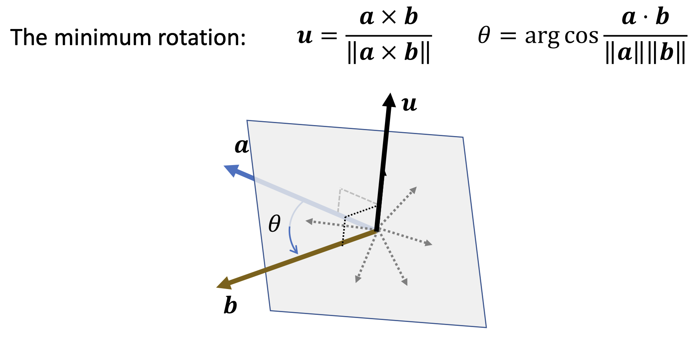
叉乘运算也可以等价为一个反对称矩阵乘运算符右侧的向量，即
\[ \mathbf{a}\times\mathbf{b}= \left[\begin{matrix} 0 & -a_z & a_y \\ a_z & 0 & -a_x \\ -a_y & a_x & 0 \end{matrix}\right] \left[\begin{matrix} b_x \\ b_y \\ b_z \end{matrix}\right] = [\mathbf{a}]_{\times}\mathbf{b} \]
这里的 \([\mathbf{a}]_{\times}\) 一般称为向量 \(\mathbf{a}\) 的叉乘矩阵。
矩阵相关
坐标系
在三维空间中，坐标系本质上由三个线性无关的基向量组成，这三个向量的所有线性组合能够描述整个坐标空间。通常，我们用标准正交基来描述，即三个相互正交的单位向量（下面写作 \(\mathbf{e}_x, \mathbf{e}_y, \mathbf{e}_z\)）。
在游戏中，坐标系又分为父坐标系和局部坐标系。如果一个物体不随世界中其他物体改变而改变，那么它的父坐标系就是世界坐标系。
假设物体在父坐标系中进行了某个旋转变换，对应的旋转矩阵为 \(\mathbf{R}\)，那么其局部坐标系的基向量也会进行相应的旋转，得到的新的基向量矩阵应该在原基向量矩阵上乘以旋转矩阵，即
\[ \left[ \begin{matrix} \mathbf{e}'_x & \mathbf{e}'_y & \mathbf{e}'_z \end{matrix} \right] = \mathbf{R} \left[ \begin{matrix} \mathbf{e}_x & \mathbf{e}_y & \mathbf{e}_z \end{matrix} \right] \]
局部坐标系 -> 父坐标系
考虑这样一个问题：已知某局部坐标系在父坐标系的旋转为 \(\mathbf{R}\)，且该局部坐标系的原点在父坐标系中的坐标为 \(\mathbf{p}_0 = (x_0, y_0, z_0)\)，求局部坐标系中坐标为 \(\mathbf{l} = (x, y, z)\) 的点在父坐标系中的坐标 \(\mathbf{p}\)。
不难想到，在父坐标系下，该点的坐标应当为「局部坐标系的原点偏移量」➕「局部坐标系的基向量」✖️「局部坐标」。
而局部坐标系相对于父坐标系的基向量就是旋转矩阵 \(\mathbf{R}\) 的列向量，那么能得到所求结果为 \(\mathbf{p} = \mathbf{p}_0 + \mathbf{R}\mathbf{l}\)。
父坐标系 -> 局部坐标系
把上述结论进行稍微修改，得到 \(\mathbf{p} = \mathbf{R}^T(\mathbf{p}'-\mathbf{p}_0)\)
旋转变换
旋转矩阵
旋转本质上是「计算新向量」。在线性代数中，我们可以通过对列向量左乘一个矩阵 \(\mathbf{R}\)（或行向量右乘）来计算，这样的矩阵称为旋转矩阵。
考虑到对物体的旋转是可逆的，且旋转及其逆操作并不会改变物体，因此有 \(\mathbf{R}^{-1}\mathbf{R} = \mathbf{I}\)，即旋转矩阵必定是一个正交矩阵。
正交矩阵的所有行（列）向量相互正交，且均为单位向量。
罗德里格斯旋转公式(Rodrigues' Rotation Formula)
该公式旨在解决这一问题：求向量 \(\mathbf{a}\) 绕旋转轴 \(\mathbf{u}\) 旋转角度 \(\theta\) 得到的新向量 \(\mathbf{b}\)
👈推导过程自行点击查看
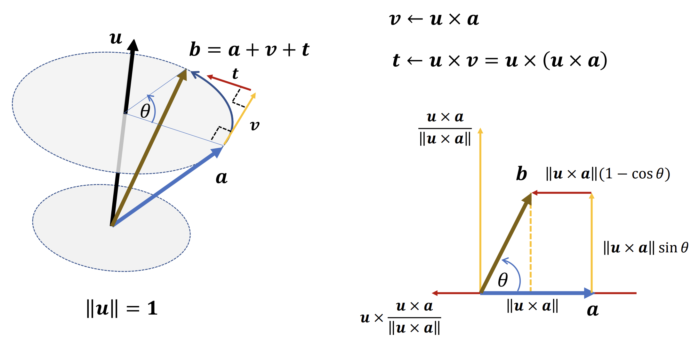
我们可以将旋转看成是向量端点在某个平面上产生的位移，此时不妨令向量 \(\mathbf{b} = \mathbf{a} + \mathbf{v} + \mathbf{t}\)，其中 \(\mathbf{v}, \mathbf{t}\) 分别与向量 \(\mathbf{u}\times\mathbf{a}\) 与 \(\mathbf{u}\times(\mathbf{u}\times\mathbf{a})\) 共向，且在该旋转平面上。
因为端点运动轨迹在平面上是一个圆，所以向量 \(\mathbf{a}, \mathbf{b}\) 在该平面上的投影长度实际上是圆的半径，二者相等，为 \(\lVert\mathbf{a}\rVert\sin(\mathbf{u}, \mathbf{a}) = \lVert\mathbf{u}\times\mathbf{a}\rVert\)
此时可以得出向量 \(\mathbf{v}, \mathbf{t}\) 的长度，分别如图所示。
将长度乘上对应的方向单位向量，能得到
\[ \begin{align} \mathbf{v} &= \sin\theta\ \mathbf{u}\times\mathbf{a}\\ \mathbf{t} &= (1-\cos\theta)\ \mathbf{u}\times(\mathbf{u}\times\mathbf{a}) \end{align} \]
结论为
\[ \mathbf{b} = \mathbf{a} + \sin\theta\ \mathbf{u}\times\mathbf{a} + (1-\cos\theta)\ \mathbf{u}\times(\mathbf{u}\times\mathbf{a}) \]
转成对应的叉乘矩阵形式就是
\[ \mathbf{b} = [\mathbf{I} + \sin\theta[\mathbf{u}]_{\times} + (1-\cos\theta)[\mathbf{u}]_{\times}^2]·\mathbf{a} \]
最终得到绕单位向量 \(\mathbf{u}\) 旋转角度 \(\theta\) 对应的旋转矩阵为
\[ \mathbf{R}(\mathbf{u}, \theta) = \mathbf{I} + \sin\theta[\mathbf{u}]_{\times} + (1-\cos\theta)[\mathbf{u}]_{\times}^2 \]
这样一来，已知旋转轴和旋转角度，我们可以很轻松地利用 Rodrigues 公式进行计算新向量。但由于一个旋转矩阵有 9 个参数，每个参数意义不明朗的同时，矩阵乘法的计算量并不小。如果要计算多次旋转（多个旋转矩阵相乘），那开销就更大了。
另一方面，如果希望对物体变换进行插值，平移操作很简单，直接线性插值即可；而如果是用旋转矩阵来表示的旋转操作，则线性插值会存在问题，比如下图就是个例子。
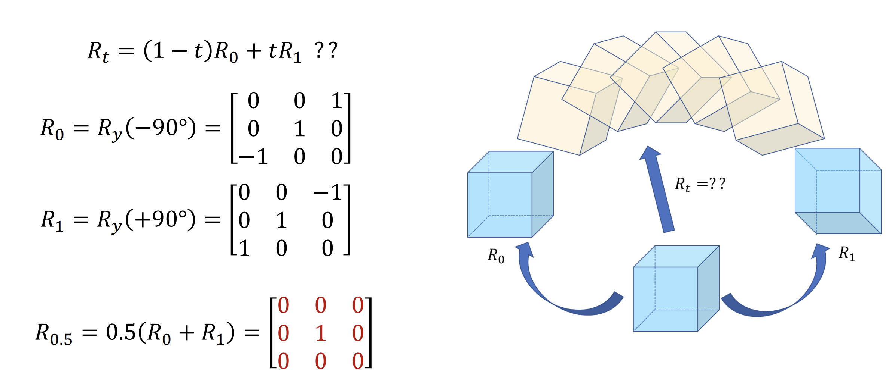
欧拉角
欧拉角实际上是把物体的旋转用一组「绕坐标轴的旋转」表示。绕 \(\mathbf{x}, \mathbf{y}, \mathbf{z}\) 三个坐标轴旋转的旋转矩阵如下：
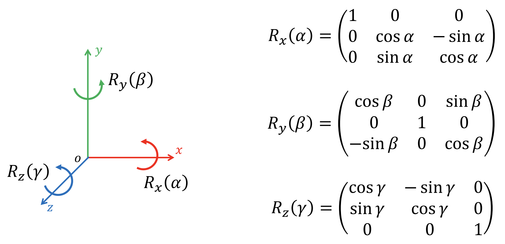
欧拉角的优点在于参数少，几何上较为直观。而缺点在于：
表示不唯一，即同一个旋转可以用不同欧拉角表示；
还是要转成旋转矩阵的乘法，且要进行三次，计算复杂度甚至提高；
会出现万向锁问题。 > 一旦选择±90°作为第二次旋转的角度，就会导致第一次旋转和第三次旋转等价，整个旋转表示系统被限制在只能绕竖直轴旋转，丢失了一个表示维度。这种角度为±90°的第二次旋转使得第一次和第三次旋转的旋转轴相同的现象，称作万向锁。
旋转向量
旋转向量可以用旋转角 \(\theta\) 和旋转轴 \(\mathbf{u}\) 的乘积表示。这两个信息分别可以通过「求模」和「单位化」来获取。对物体旋转状态的插值可以转为对旋转向量进行线性插值。
旋转向量的优点在于很直观地表示旋转，但要注意 \(\theta=0\) 的 corner case。
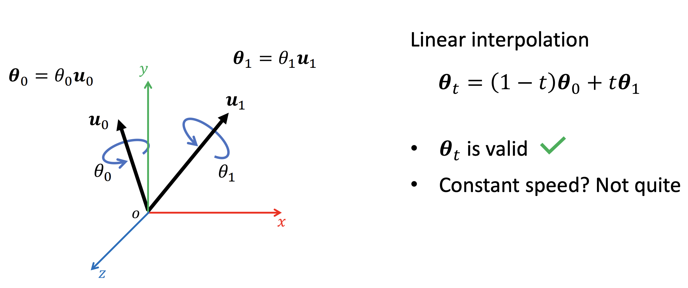
四元数
四元数参考了二维空间中的复数表示，将其拓展，如下所示。
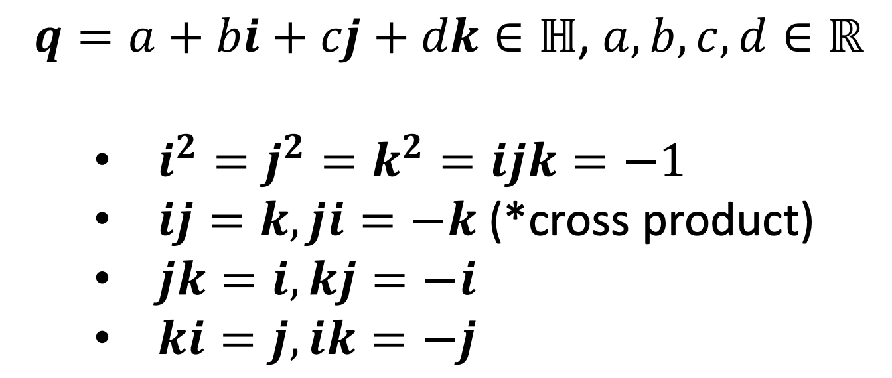
基本性质
复数表示法 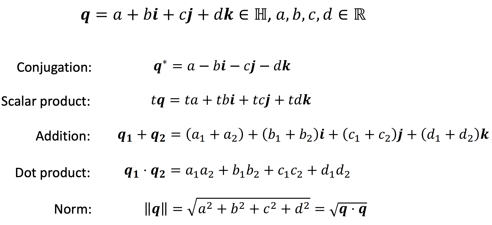
向量表示法 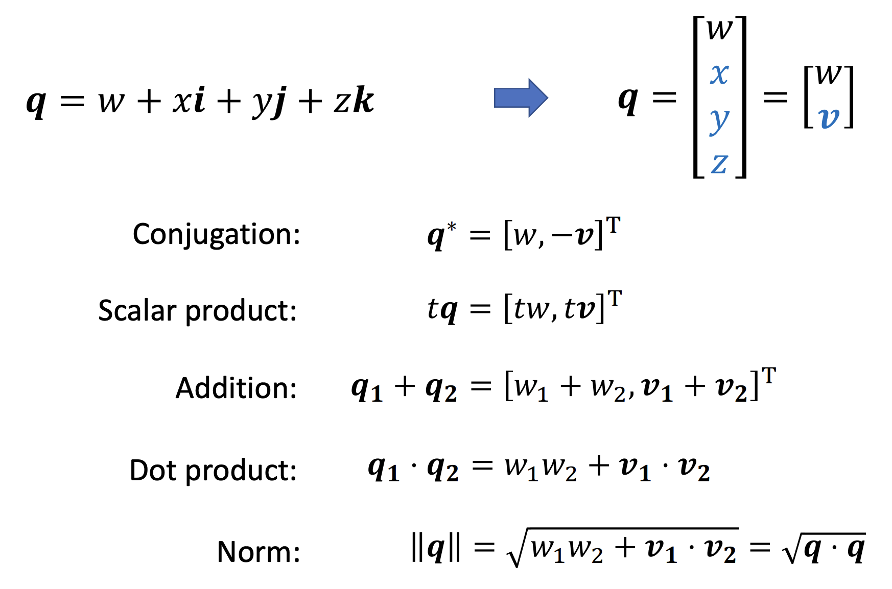
对于四元数的乘法，则可直接应用乘法分配律。
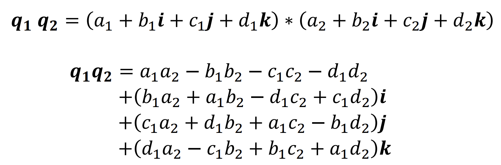
转成向量表示法如下，更加简单。
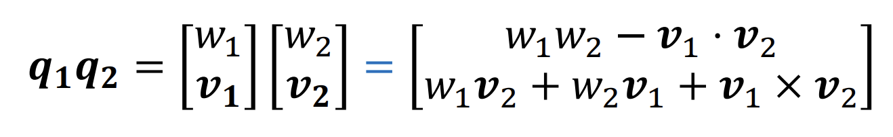
可以简单证明，四元数乘法不满足交换律（因为叉乘不满足，除非共线，但此时乘积为 0），但满足结合律。此外，还有以下三条性质，这和复数非常相似。
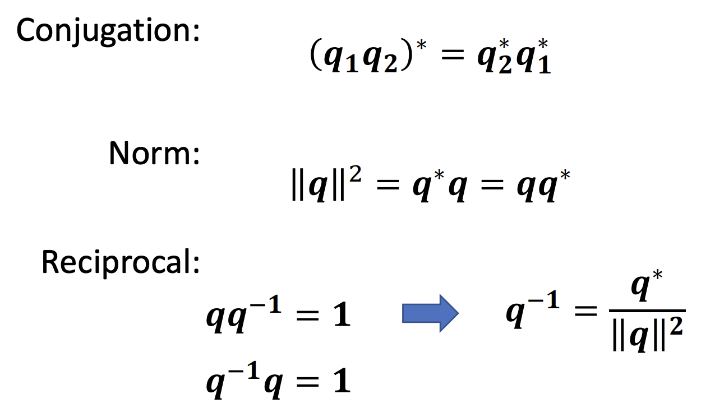
旋转变换应用
我们首先定义单位四元数，其模长为 1，，因此其逆等于其共轭。这和旋转矩阵的性质（\(\mathbf{R}^T=\mathbf{R}^{-1}\)）非常相似！事实上现在主流的方法就是用单位四元数来表示一个旋转，即
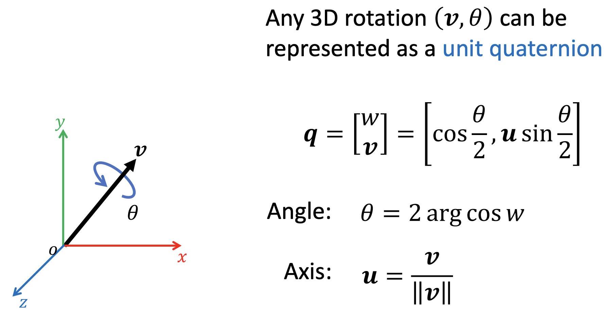
不难发现 \(\mathbf{q}\) 和 \(-\mathbf{q}\) 表示同一旋转。
那么用四元数来旋转向量则可以表示为
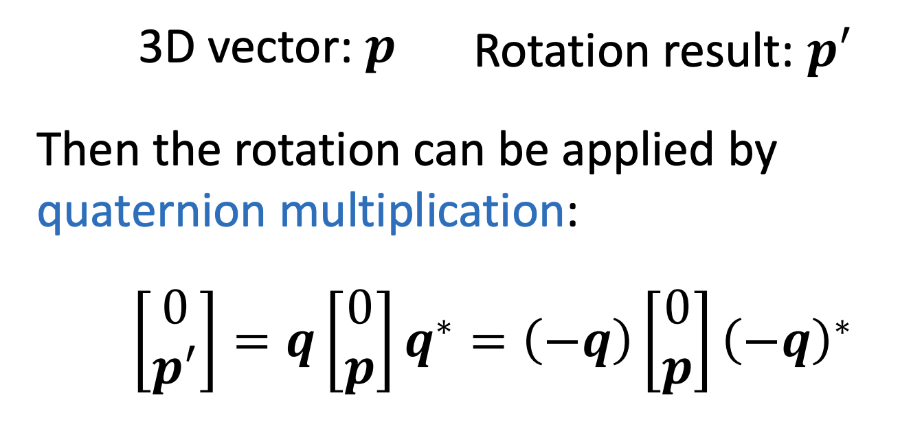
如果要对两个旋转进行叠加，只需要进行一次四元数乘法即可。
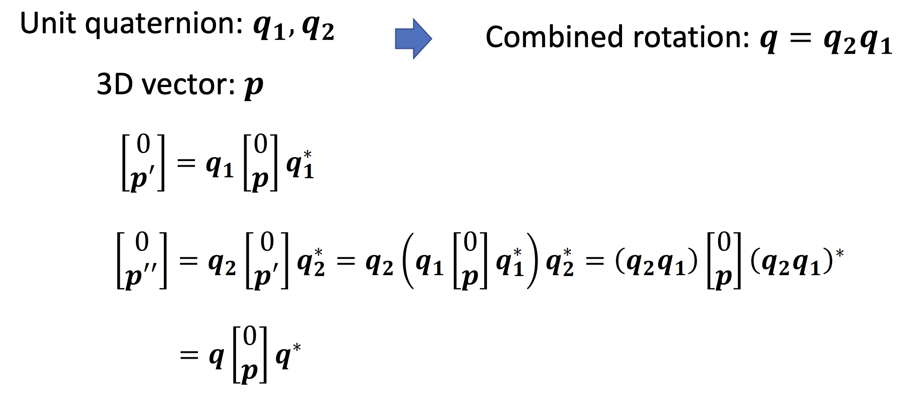
四元数除了参数不直观、表示不唯一以外无懈可击！它完美解决了欧拉角万向锁的问题，同时又吸取了旋转向量的优势，计算效率高的同时，在插值上也非常平滑。可以直接对两个旋转状态进行线性插值，但不能保证匀速。
可以将四元数视为单位球上的某一点，在两点之间进行线性插值，角速度并不均。
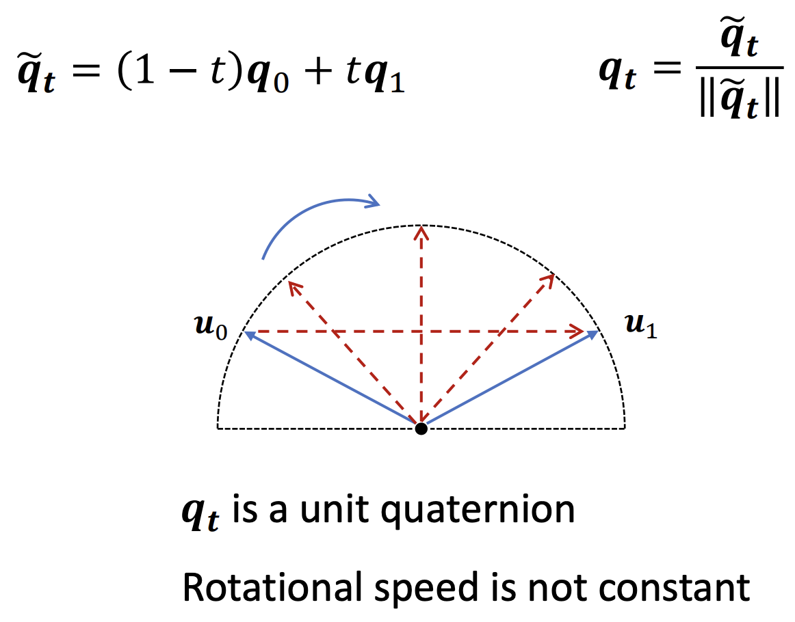
为了使插值更平滑，可以采用球面线性插值(SLerp)的方式。
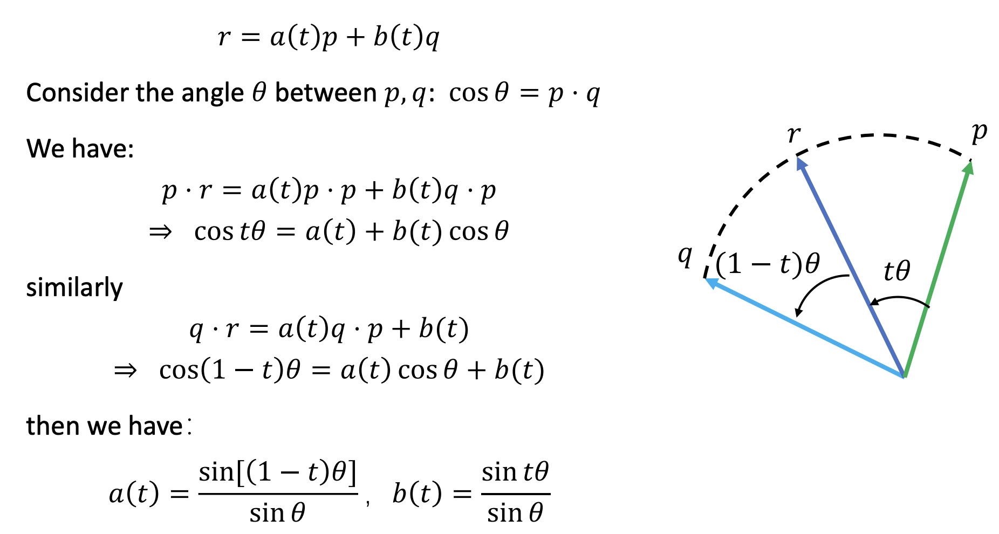
运动学
前向运动学(Forward Kinematics)
FK 的核心思想是：从骨骼层级结构的根部开始，沿着层级结构逐关节向下计算，最终确定末端在全局空间中的位置和方向。
已知每个关节的旋转状态 \(\mathbf{R}_i\)，则关节局部坐标系的基向量 \(\mathbf{Q}_i\) 可以如下求得：
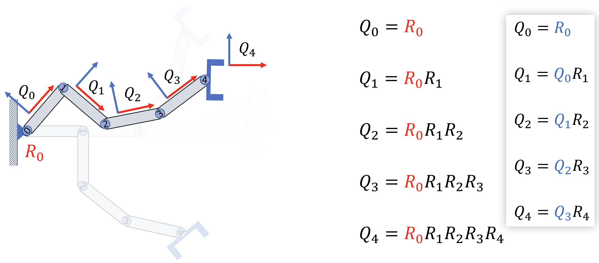
关节 \(i\) 相对于关节 \(j\) 的旋转可以表示为 \(\displaystyle \prod\limits_{k=j+1}^i \mathbf{R}_k\)
末端局部坐标系中的任意一点 \(\mathbf{x}_0\) 相对于关节 \(k\) 的位置可以通过以下方法求解。
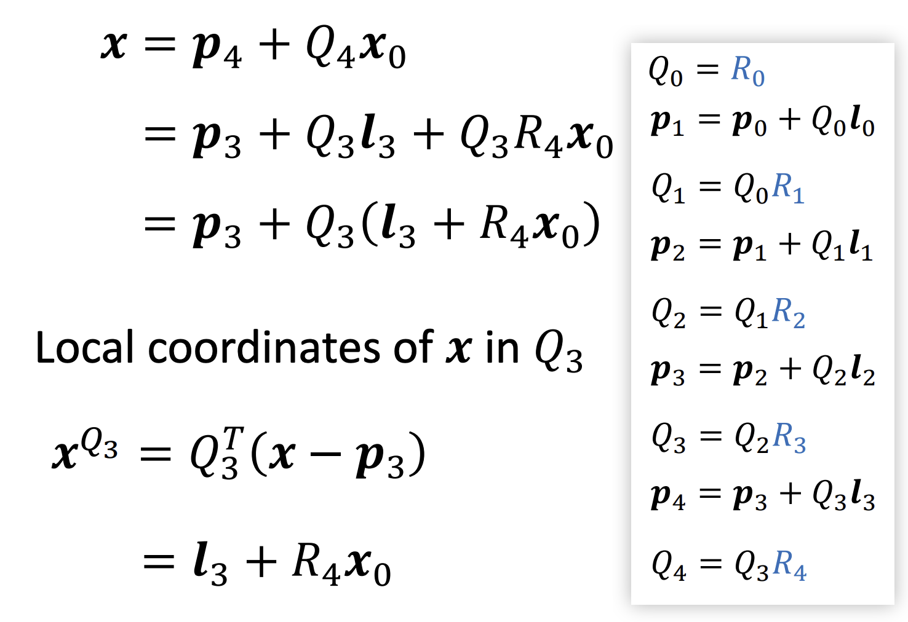
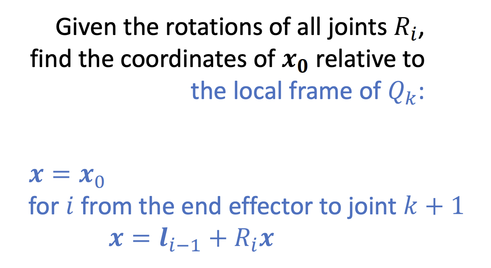
其中 \(\mathbf{l}_i\) 是关节 \(i+1\) 在父关节局部坐标系中的坐标，\(\mathbf{x}_0\) 是目标点在末端坐标系中的局部坐标。
不妨把角色建模为这样一个树状结构，每个关节有不同性质。一般来说把根节点放在腰部。不同根节点的设置会导致最终旋转效果不同。
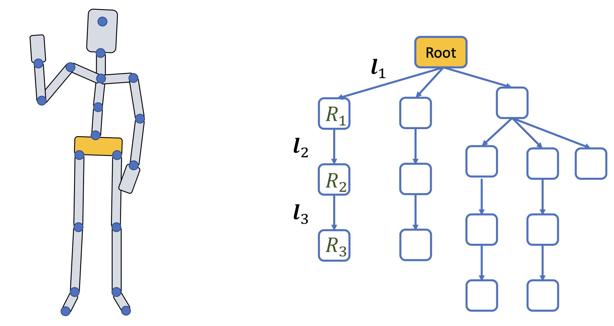
逆向运动学(Inverse Kinematics)
IK 是 FK 的逆过程，其本质是为了求解这样一个问题：已知末端目标在全局空间中的位置与方向，求解父关节的旋转状态。
两关节 IK 问题
+++ 123345 123 +++
两关节 IK 问题是最简单且常见的问题。比如胳膊和腿。一般有两种求解方式：
- 方法一：
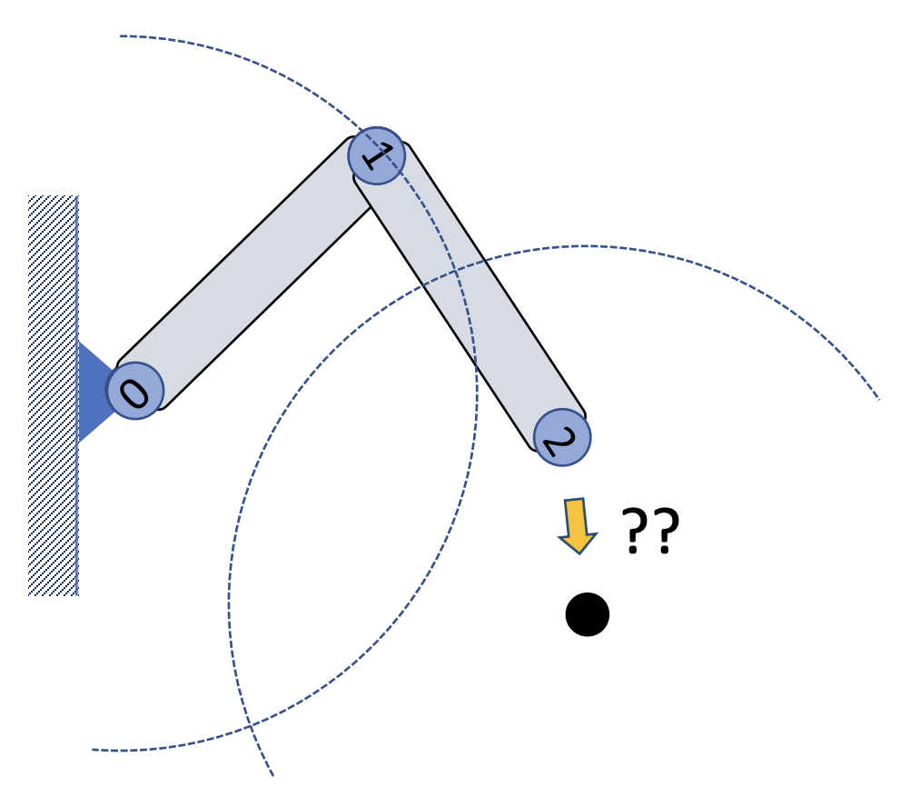